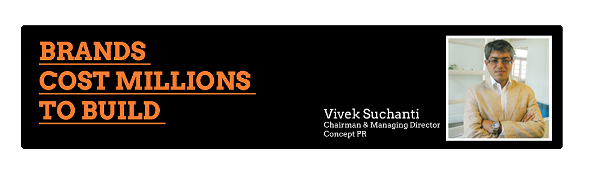

The PR practice in India has evolved and changed drastically in the last few years. The challenges faced on the digital front found agencies groping for answers. With 80 million internet users (70% of them on social networks) and a mind boggling 600 million mobile users (new advanced handsets and 3G) the landscape is frightening for any conventional PR practitioner.
Activism by consumers, employees, investors, stakeholders and media have forced corporates, policymakers and the powers that be to address situations that were hitherto unknown to them. The Right to Information (RTI) Act has put powers in the hand of every citizen and he is not shy to use it to bring even the mightiest down if he feels wronged. The tsunami effects of which can leave brands and reputations destroyed with little hope of regaining all their previous glory.
We were luckily the early adapters and embraced the new media. We saw opportunities to build brands and reputations, engage the consumer and the stakeholders with conversations rather than a one way communication a powerful tool to be used judiciously. Our roles as communicators had undergone a metamorphosis. Even the die-hard traditional PR practitioners at the firms were quick to change. The partners at the firms, each of them the very best in their area of specialization found their communication enhanced and solutions to difficult problems at hand.
The Indian media universe has been complex. We have the largest number of television news channels, the largest number of publications, numerous regional languages all in all a large footprint to cover. While our relationship with the media has been our strength, our reputation as fact facilitators is unblemished. Working within strict regulatory guidelines for our clients listed on the stock exchanges, a fully compliant IPO team, ISO 9001 certified systems and processes put us in an enviable position in the PR Agency landscape in the country.
Respected as strategic counselors, Senior Partners at the firms are custodians and are charting courses for some of the most trusted brands in India. Unlike other firms, we have worked on long term strategies and executed them with a finesse which has no parallels. Deep understanding of the subject and the impact of our communication, pro-actively addressing concerns, strategic advocacy have helped create conducive environments for clients. This comes inherently from believing in our work. It does mean that we do not take on assignments we are uncomfortable with.
Being a part of the IPREX network has also helped offer PR services in most geographies across the world with Senior Management of the partner agencies putting their best resource at our disposal. Mokosvy + Co, New York and Concept PR have put together a US-India desk a great success.
With clients recognizing the criticality of building bridges, initiating conversations, reinforcing reputations, creating communities and the direct impact of strategic advocacy on their business, the PR practice in the country is on the threshold of a new era. The transformation with 3G will also enable communication in a freer and more flexible world with no restrictions.